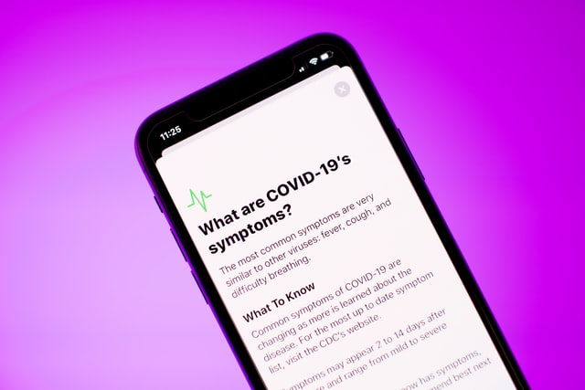

Pengenalan COVID 19

Penyakit koronavirus 2019 (bahasa Inggris: coronavirus disease 2019, disingkat COVID-19 adalah penyakit menular yang disebabkan oleh SARS-CoV-2, salah satu jenis koronavirus. Penyakit ini mengakibatkan pandemi koronavirus 2019–2020. Penderita COVID-19 dapat mengalami demam, batuk kering, dan kesulitan bernapas. Sakit tenggorokan, pilek, atau bersin-bersin lebih jarang ditemukan. Pada penderita yang paling rentan, penyakit ini dapat berujung pada pneumonia dan kegagalan multiorgan.
Infeksi menyebar dari satu orang ke orang lain melalui percikan (droplet) dari saluran pernapasan yang sering dihasilkan saat batuk atau bersin. Waktu dari paparan virus hingga timbulnya gejala klinis berkisar antara 1–14 hari dengan rata-rata 5 hari. Metode standar diagnosis adalah uji reaksi berantai polimerase transkripsi-balik (rRT-PCR) dari usap nasofaring atau sampel dahak dengan hasil dalam beberapa jam hingga 2 hari. Pemeriksaan antibodi dari sampel serum darah juga dapat digunakan dengan hasil dalam beberapa hari. Infeksi juga dapat didiagnosis dari kombinasi gejala, faktor risiko, dan pemindaian tomografi terkomputasi pada dada yang menunjukkan gejala pneumonia.
sumber : wikipedia.org
Berita Penting
Mall emang sudah dibuka, cuma ada tapinya

Fakta: Covid ga bisa menular melalui tatapan mata kaki
Pemerintah himbau jangan sebar hoax terus

Penularan Covid 19

Orang dapat tertular COVID-19 dari orang lain yang terinfeksi virus ini. COVID-19 dapat menyebar terutama dari orang ke orang melalui percikan-percikan dari hidung atau mulut yang keluar saat orang yang terinfeksi COVID-19 batuk, bersin atau berbicara. Percikan-percikan ini relatif berat, perjalanannya tidak jauh dan jatuh ke tanah dengan cepat. Orang dapat terinfeksi COVID-19 jika menghirup percikan orang yang terinfeksi virus ini. Oleh karena itu, penting bagi kita untuk menjaga jarak minimal 1 meter dari orang lain.
Percikan-percikan ini dapat menempel di benda dan permukaan lainnya di sekitar orang seperti meja, gagang pintu, dan pegangan tangan. Orang dapat terinfeksi dengan menyentuh benda atau permukaan tersebut, kemudian menyentuh mata, hidung, atau mulut mereka. Inilah sebabnya penting untuk mencuci tangan secara teratur dengan sabun dan air bersih mengalir, atau membersihkannya dengan cairan antiseptik berbahan dasar alkohol. WHO terus mengkaji perkembangan penelitian tentang cara penyebaran COVID-19 dan akan menyampaikan temuan-temuan terbaru.
sumber: who.int
Pencegahan dari Covid 19

Sampai berita ini dibuat, belum ada vaksin untuk covid-19. Jadi untuk menghidari terkena virusnya, Berikut pencegahan penularan Covid 19 :
- Menggunakan Masker
- Mencuci tangan dengan benar dan sabun
- Menjaga daya tahan tubuh
- Menerapkan social distancing
Semoga semua sehat dan vaksinnya segera ditemukan.